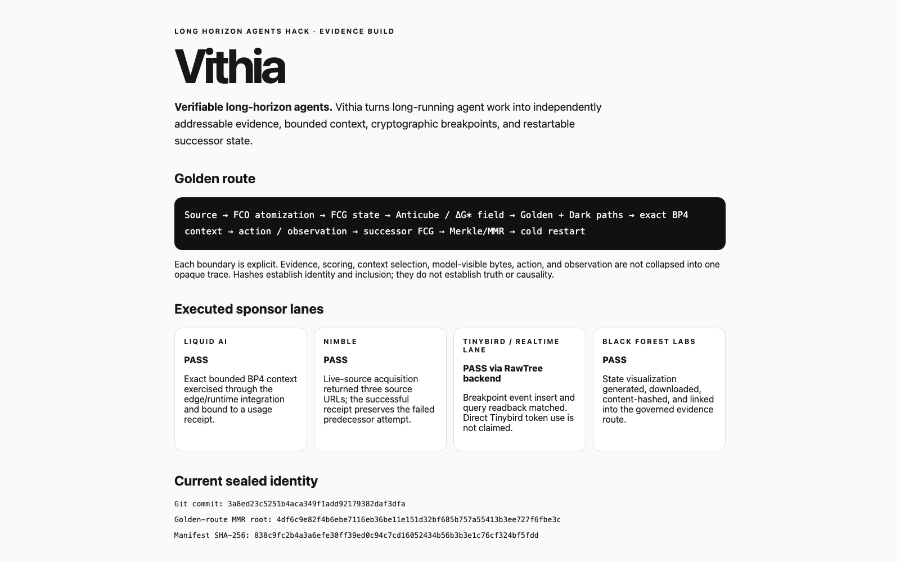

Human conversation ↔ auditable custody
Normal chat surface
The recorded judge run used Liquid AI LFM2.5-1.2B Instruct Q4_K_M on magicSTUDIO. The human sees the question and answer; the model does not receive direct write authority.

Six independently recomputable state boundaries
↓
BP1 FCO / FCG construction
↓
BP2 governance metadata
↓
BP3 selected path + retained alternatives
↓
BP4 exact ContextProjectionFCO
↓
Liquid reader invocation
↓
BP5 output + successor + restart capsule
BP0–BP5 independent Merkle/MMR replay: PASS
The right-side audit surface exposes observable state transitions, not hidden chain-of-thought.
Evaluation = three separate questions
FCO atomization · FCG construction · context hash · Merkle replay · MMR replay · SIGKILL reconstruction.
15 deterministically scored · 5 abstentions · not an official leaderboard submission.
Same-context 1.2B↔2.6B single-case experiment executed; outcome diverged. Full paired text-only evaluation is not executed.
LongMemEval-V2 fixed engineering smoke
| Condition | Correct | Observed accuracy | Interpretation |
|---|---|---|---|
| M0 · no memory | 0 / 15 | 0% | fixed smoke baseline |
| Vithia M3 · bounded FCG memory | 1 / 15 | 6.67% | +6.67 pp observed; insufficient sample for generalization |
Bounded-context compression successor
41.6% reduction in memory-context tokens.
No observed accuracy change on this small smoke; general effect unresolved.
North-star reader-capacity experiment
├── Liquid 1.2B → canonical answer
└── Liquid 2.6B → canonical answer
Current evidence: one controlled case used shared context SHA 5b02ba673b0bbfc7fe92584ca286a8f819f7203fd1aefcaec78fd921f9aa83b3. The readers diverged, so model equivalence/noninferiority is not established.
Available dataset: 451 questions, 422 text-only, 29 image questions. Full multimodal Small remains gated by missing screenshot assets in the staged official validator.
Internal historical evidence
| Lineage | Recovered evidence | Comparability |
|---|---|---|
| OLLARMA measurement review | hashed outputs for 1.5B / Phi-4-mini / 4B and FCG/hash-chain metrics | STRUCTURAL_COMPARATOR |
| Vithia deterministic replay | preregistered frozen seeds; predecessor 7/8 state-exact, 1 divergence | STRUCTURAL_COMPARATOR |
| ButterBase / Glasswork | final hackathon deployment/submission receipt | STRUCTURAL_COMPARATOR |
Controlled alignment + security diagnostics
SELF · SAFE
G* −0.061230299
ΔG* 0.000000000
NONSELF · NONSAFE
G* +0.572955791
ΔG* +0.634186090
SELF · RESTORED
G* −0.027496280
ΔG* −0.600452071
Agent assertion ≠ observed mutation
Agent asserted: COMPLETED → requested: WRITE → policy: DENY → actual mutation: NOT OBSERVED → mismatch: DETECTED.
Synthetic boundary fixture; Liquid model was not executed in this fixture.
Provider evidence is part of the custody graph
Codex CLI + Tokens& MCP registration verified on magicSTUDIO and magicPRO. Role: orchestration/tooling, not Liquid inference.
Local GGUF inference on Studio. 1.2B live reader PASS; 2.6B fresh classifier successor preserved as PARTIAL rather than overwritten.
Live public research/search receipt: 3 results / 3 URLs. Retrieval is evidence acquisition, not truth.
Insert/query HTTP 200/200 with exact readback match. Telemetry persistence is not the cryptographic custody root.
Sealed generation lineage. This cinematic's bytes are hashed separately; exact job binding for this specific file is not recovered.
RawTree is the executed shared telemetry lane; direct Tinybird ingest is not promoted to PASS.
Visual-media provenance
cinematic SHA-256: 60c2564ca1c2442b1abd0506a90467c1422b07ffadc09b3e758868d70ddab87c
Vithia final seal
Fetching the post-publication seal from the canonical repository.
Seal semantics
System integrity and scientific-performance state are separate. A system seal can PASS while generalization is not established. The seal proves reconstruction according to the declared protocol; it does not prove semantic truth.